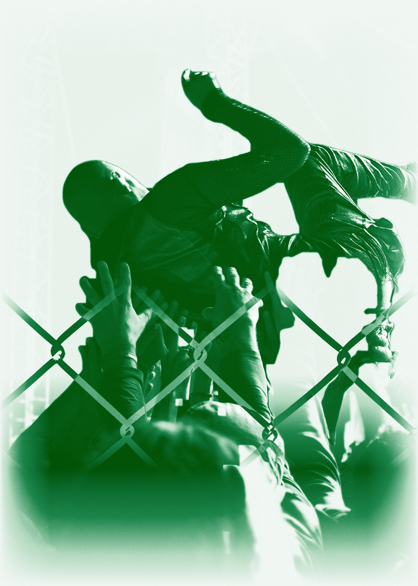
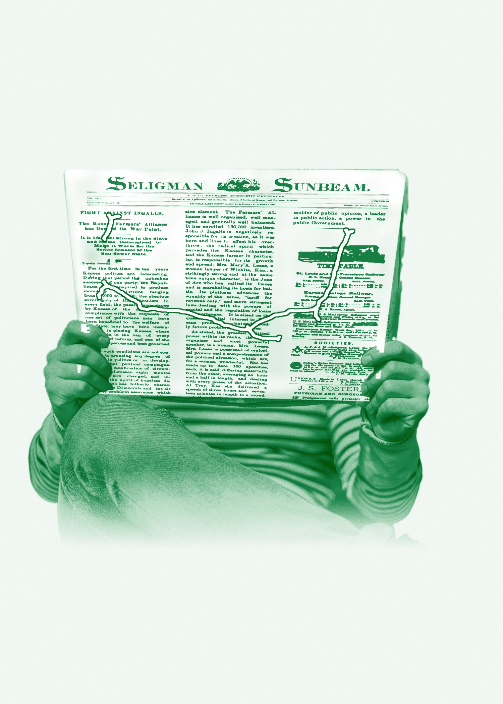
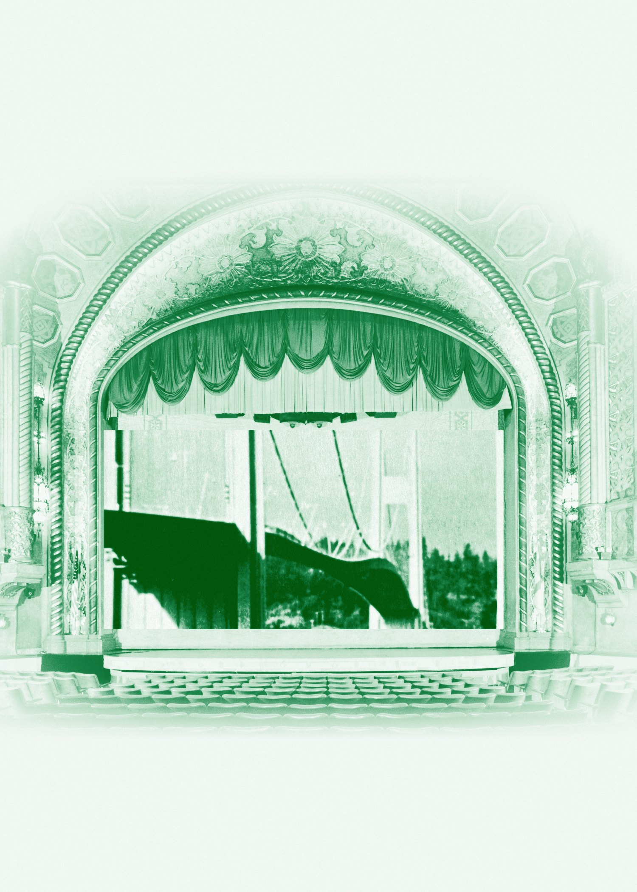
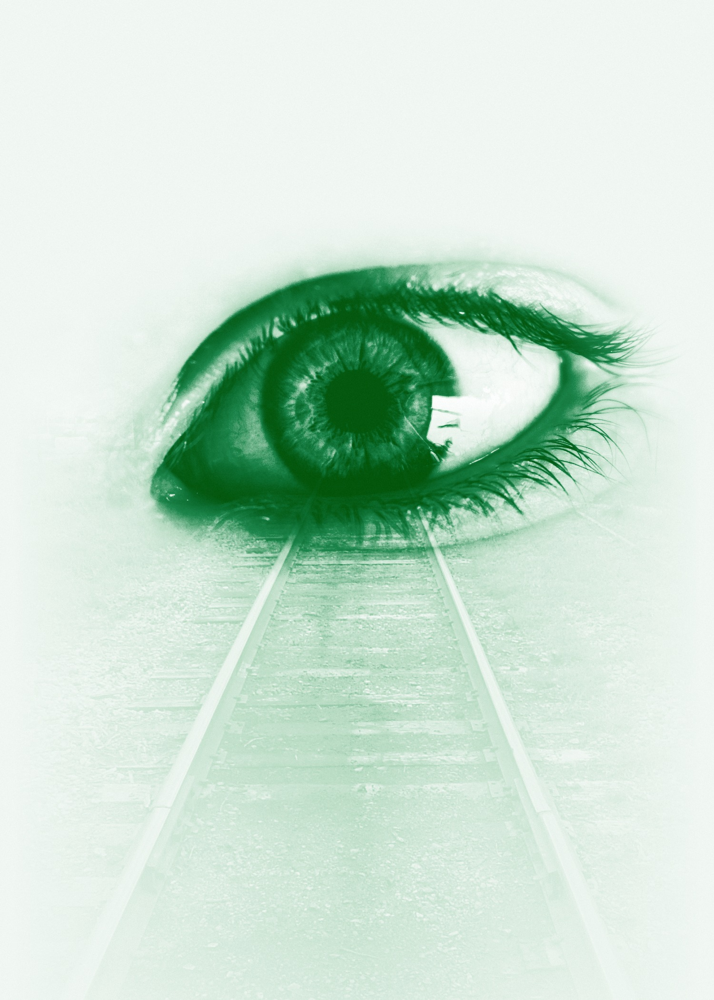
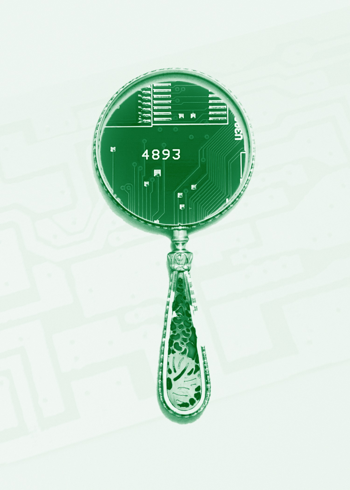
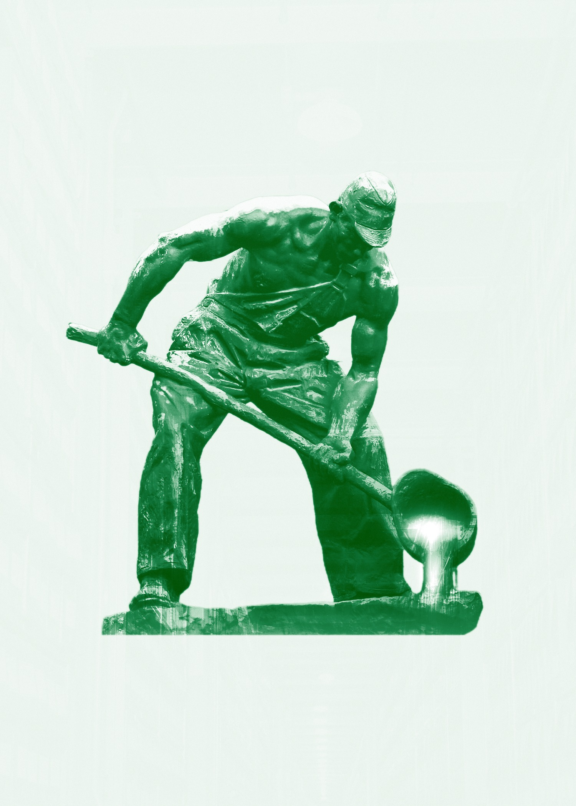

REPOSITORY_ID: AXL-RSCH-DB
STATUS: ROLLING_PUBLICATION
02_RESEARCH
RSCH_02
[ THE_RESEARCH_AGENDA ]
Built like a university hospital.
We're built like a university hospital: the commercial lab earns at market rates and funds the nonprofit side, which runs the public-good research.
FIG. 02 // ONE MISSION, TWO BODIES
For-profit · Aux Labs LLC
The commercial lab
Clients pay market rates for research, creative and policy work.
On its own: a working practice that pays its own way.
Nonprofit · being stood up
The Switchboard™
Runs the trust-repair cascade as grant-funded public-interest work.
On its own: grant-funded, run on the published protocol.[ FIELD_NOTE ]The field is behavioral infrastructure. The method is applied mechanism design: the economics discipline of Hurwicz, Maskin and Myerson. They are not the same thing, and we do not collapse them.
Behavioral Infrastructure
Applied Mechanism Design
Causal Inference
Computational Social Science
FLAGSHIP_PROGRAM
The Pretend Era™
The lab's flagship research program is a falsifiable framework diagnosing institutional trust collapse as a pluralistic-ignorance equilibrium: a condition in which most people privately reject the official story but comply with it, believing everyone else accepts it. The framework specifies measurable signatures and the conditions under which it would be wrong. Everything else the lab builds is downstream of this diagnosis.
WORK_WITH_US
Like how we think? Bring us a problem.
Every paper here started as someone's live problem. If yours looks like one of them, let's talk.
[ BOOK_A_MEETING ]Or write to imran@auxlabs.co
PRIOR_PUBLICATIONS
Peer-Reviewed
Jin, M.X., Rajan, S., Gary Bicas, C.E., Hao, M., Dong, L., Mufson, B., & Hafiz, I. (2021). Novel Validated Index for the Measurement of Disinformation Susceptibility at the County Level. Cureus, 13(5). -> Known as the Jin-Hafiz Index. PubMed · PMID 34211810
THE_WORKING_PAPER_INDEX // AXL-WP-01 … AXL-WP-10
Swipe or use the arrows







Borrowed Voices: Stigma, Preference Falsification, and the Human Data Problem in AI Alignment
FIELD_PLANS // WORK THAT RUNS OUTSIDE THE INDEX
 THE COMMONS
Social media stopped being social.
A credible plan to move people off a broken social media model and into communities that are actually social, rooted in trust and consent. The first one is already running.
READ_THE_NECTAR ->
THE COMMONS
Social media stopped being social.
A credible plan to move people off a broken social media model and into communities that are actually social, rooted in trust and consent. The first one is already running.
READ_THE_NECTAR ->
ROUTES // WHO THIS PAGE IS FOR
Academics.
A testbed with real deployment for questions that usually die at the end of a paper. Method named, data open. Cite us.
Grant Funders.
Predictions stated in advance, and a structure built so funding cannot bend the finding.
Journalists.
The data is open and the firewall is written down. Conflicts disclosed before you ask.